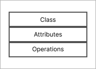
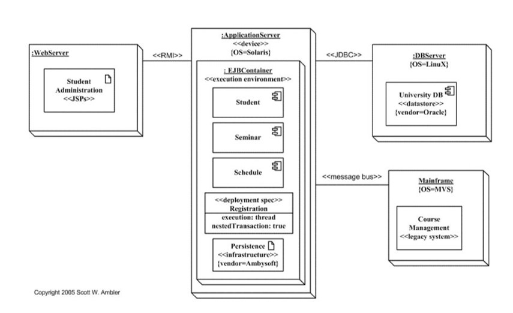

UML-диаграмма — это схема, нарисованная с применением символов UML. Она может
содержать множество
элементов и соединений между ними. Полное описание масштабного проекта может состоять из
несколько UML-диаграмм, связанных или не связанных между собой.
UML-диаграмма– визуальное описание процесса, классов, взаимодействия
Элементами диаграммы UML могут быть классы программного кода, страницы сайта, части механизма,
зоны торгового зала — в зависимости от того, какой процесс или какую сущность описывает её
создатель.
В языке UML десятки разных элементов. Основные элементы языка и их визуальные обозначения:
Класс

Набор объектов со схожими свойствами
Интерфейс
Набор доступных операций для объекта
Юзкейс
Набор действий, которая система может выполнить или не выпонлить
Связь
Показывает, что объекты связаны между собой
Компонент
Большая часть системы, например, файл или библиотека
Узел
Еще более крупная часть системы. Как правило, содержит компоненты, например, сервер, на
котором запущена программа
Взаимодействия
Обмен информацией между компонентами системы
Зависимость
При изменении одного элемента изменяется и другой, соединенный с ним стрелкой такого типа
Состояние
Особая конфигурация системы, через которую она проходит. Например, фаза вычислений, во время
которой программа не отвечает на другие запросы
Пакет
Объединение нескольких элементов диаграммы в группу по определенному критерию
Заметка
Небольшой комментарий к отдельным элементам диаграммы
Аггрегация
Целевой элемент, часть исходного элемента
Обобщение
Исходный элемент. Чатсная разновидность другого, более общего элемента, как объект и класс в
программировании
Типы диаграмм
структурированные
поведенческие
описывают структуру сложных объектов и систем
иллюстрируют взаимодействие с системой и процесс её работы
Общая картина взаимоействия
Как устроено, кто с кем связан
Динамическое поведение, изменение состояния во времени
Как работает, последовательность процессов
Диаграммы UML
Структурированные
Поведенческие
Диаграмма потоков данных
Диаграмма взаимодействия
×
ДИАГРАММА КЛАССОВ
Эта диаграмма, наиболее распространенная при разработке ПО, используется для
изображения логической и физической структуры системы и показывает ее классы.
Она похожа на блок-схему, потому что классы представлены в виде блоков. Эта
диаграмма предлагает визуальное представление о различных классах и о том, как
они взаимосвязаны. У каждого класса есть три секции:
Верхняя секция: имя класса
Средняя секция: атрибуты класса
Нижняя секция: методы или операции класса
×
ДИАГРАММА ОБЪЕКТОВ
Часто эта диаграмма используется как способ проверить диаграмму классов на
точность. Другими словами, будет ли это работать на практике? Она показывает
системные объекты и их взаимосвязи и предлагает лучшее представление о
потенциальных недостатках проекта, которые необходимо исправить. Показывает
состояние экземпляров классов с конкретными значениями полей в определенный
момент времени.
×
ДИАГРАММА ПАКЕТОВ
Этот тип используется, чтобы изобразить зависимости между пакетами, которые
составляют модель. Основная цель — показать взаимосвязь между различными
крупными компонентами, которые образуют сложную систему, а также демонстрирует
вложенность и связи между пакетами.
×
СОСТАВНАЯ СТРУКТУРНАЯ ДИАГРАММА
Этот тип редко используется кем-либо за пределами разработки программного
обеспечения. Почему? Хотя она похожа на диаграмму классов, она требует более
глубокого погружения, описывая внутреннюю структуру нескольких классов и
показывая взаимодействие между ними. Если вы не разработчик, верхний уровень
дает достаточно информации.
×
ДИАГРАММА КОМПОНЕНТОВ
Также известна как блок-схема компонентов, она показывает логические группы
элементов и их взаимосвязи. Другими словами, она дает упрощенное представление о
сложной системе, разбивая ее на более мелкие компоненты. Каждый из элементов
показан в прямоугольной рамке с названием, написанным внутри. Соединители
определяют отношения / зависимости между различными компонентами.
×
ДИАГРАММА РАЗВЕРТЫВАНИЯ
На этой диаграмме показаны аппаратные (узлы) и программные (артефакты)
компоненты и их взаимосвязи. Она предлагает наглядное представление о том, где
именно развернут каждый программный компонент.

×
ДИАГРАММА ПРОФИЛЯ
Этот тип меньше похоже на диаграмму и больше — на язык. Диаграмма профиля
помогает создавать новые свойства и семантику для диаграмм UML путем определения
пользовательских стереотипов, теговых значений и ограничений. Эти профили
позволяют настраивать метамодель UML для различных платформ (например, Java
Platform, Enterprise Edition (Java EE) или Microsoft .NET Framework) и доменов
(например, моделирование бизнес-процессов, сервис-ориентированная архитектура,
медицинские приложения и т. д.).
×
ДИАГРАММА ВАРИАНТОВ ИСПОЛЬЗОВАНИЯ
В этом типе описывается, что делает система, но не то, как она это делает.
Вариант использования — это набор событий, которые происходят, когда “оператор”
использует систему для завершения процесса. Оператор определяется как кто-либо
или что-либо, взаимодействующее с системой (человек, организация или приложение)
из-за пределов системы. Таким образом, диаграмма вариантов использования
визуально описывает этот набор последовательностей и представляет функциональные
требования системы.
×
ДИАГРАММА ДЕЯТЕЛЬНОСТИ
Этот тип изображает пошаговый процесс с четким началом и концом. Это набор
операций, которые должны быть выполнены, чтобы достичь цели. Она показывает, как
каждое действие ведет к следующему, и как все они связаны. Помимо разработки
программного обеспечения, они могут использоваться практически в любой
бизнес-среде. Их также называют картированием или моделированием
бизнес-процессов.
×
ДИАГРАММА КОНЕЧНОГО АВТОМАТА
Эта диаграмма, также называемая диаграммой состояний, применяется, когда
поведение объектов является сложным, а детали — существенными. Она помогает
описать поведение одного объекта (или иногда оператора) и то, как оно изменяется
в зависимости от внутренних и внешних событий.
×
ДИАГРАММА ПОСЛЕДОВАТЕЛЬНОСТИ
Эта визуально привлекательная диаграмма, популярная не только в сообществе
разработчиков, хорошо показывает все типы бизнес-процессов. Она просто
раскрывает структуру системы, показывая последовательность сообщений и
взаимодействий между операторами и объектами в хронологическом порядке.
Диаграммы последовательности отображают простую итерацию и ветвление. Это имеет
преимущества для многозадачности.
×
ДИАГРАММА СВЯЗИ
Диаграмма связи или сотрудничества аналогична диаграмме последовательности. Тем
не менее, она подчеркивает связь между объектами, показывает организацию
объектов, участвующих во взаимодействии, и предлагает более сложные итерации и
ветвления.
×
ВРЕМЕННАЯ ДИАГРАММА
Когда время имеет критическое значение, используется этот тип диаграмм UML.
Она показывает, как объекты и операторы действуют на временной шкале. Основное
внимание здесь уделяется тому, сколько времени занимают события и какие
изменения происходят в зависимости от ограничений продолжительности. Основные
части временной диаграммы включают в себя:
Линия жизни: индивидуальный участник
Хронология состояний: разные состояния, через которые проходит линия жизни
Ограничение продолжительности: время, необходимое для выполнения ограничения
Ограничение по времени: время, за которое участник должен выполнить что-то
Возникновение разрушения: где заканчивается линия жизни объекта. Никакое
другое событие не произойдет после появления разрушения на линии жизни.
×
ОБЗОРНАЯ ДИАГРАММА ВЗАИМОДЕЙСТВИЯ
Эта зачастую сложная диаграмма похожа на диаграмму деятельности, так как обе
показывают пошаговую последовательность действий. Но обзорная диаграмма
взаимодействия — это диаграмма деятельности, составленная из разных диаграмм
взаимодействия. Они используют те же аннотации, что и диаграмма деятельности
(начальная, конечная, решение, слияние, разветвление и соединение узлов) с
добавлением таких элементов, как взаимодействие, использование взаимодействия,
ограничение по времени и ограничение продолжительности.